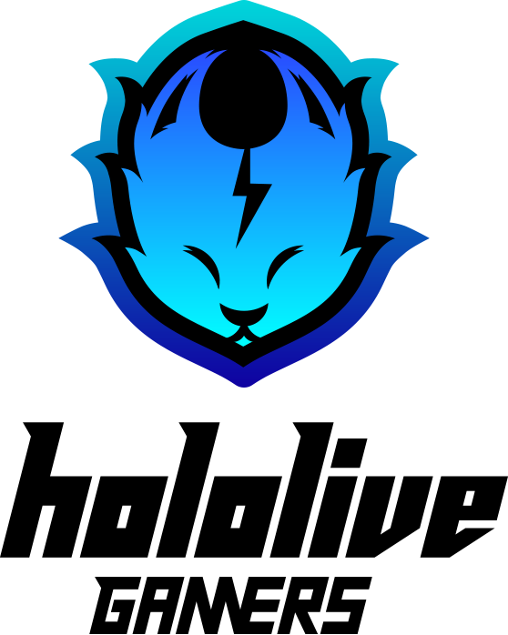

A cat raised by a old woman from the onigiri store. She streams just because there is a PC in the old woman’s room.Hololive Offical Description

| Name | 猫又おかゆ / Nekomata Okayu |
|---|---|
| Birthday | 22 February |
| Debut Date | 6 April, 2019 |
| Ilustrator | Kamioka Chihiro |
| Affiliation | Hololive Gamers |
| Fan Name | Onigiriya |
| Youtube Channel | Okayu Ch. 猫又おかゆ |
| 猫又おかゆ🍙 |
Overview
Nekomata Okayu is a cat girl VTuber in the Hololive Gamers unit. Okayu is known for her relaxing voice and calm disposition, both of which aren’t present when she, in very rare times, is playing a horror game. She has been playing games since childhood as her grandmother owned a lot of 80’s and 90’s games.
She mainly plays RPG games and loves the Super Mario series. While not an RPG, one of her favorite games is Mario 64 which she took the time to learn the speedrunning strategies for. When playing RPG games, Okayu often adds depth to the characters’ personalities by establishing quirky traits unique to that playthrough. For example, when playing Paper Mario, Okayu had no reason to upgrade Kooper and he ended up being the last one to be upgraded despite being the 2nd one to join the team. This led to Kooper being the sandbag of the team and the butt of many "useless" jokes since other characters like Bombette and Parakarry did his job better than he could.
Her representative emoji is an Onigiri (rice ball) since she used to live with an old lady in a rice ball store, and her fans are called the Onigirya (the Rice Balls).
(Hololive Wiki)
